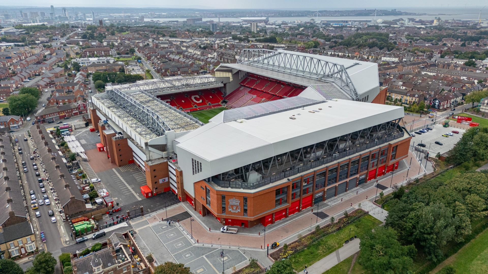

SPORTS ANALYTICS · FORECASTING
Anfield Matchday Intelligence
A sold-out stadium. An unused ticket. Someone still trying to get in.
I explored unused tickets and supporter access across 38 home matches in two Premier League seasons, then built an interactive website connecting the findings to matchday decisions.
Finding A historical-average forecast outperformed Ridge regression on nine held-out matches.
Independent project; not affiliated with Liverpool FC.